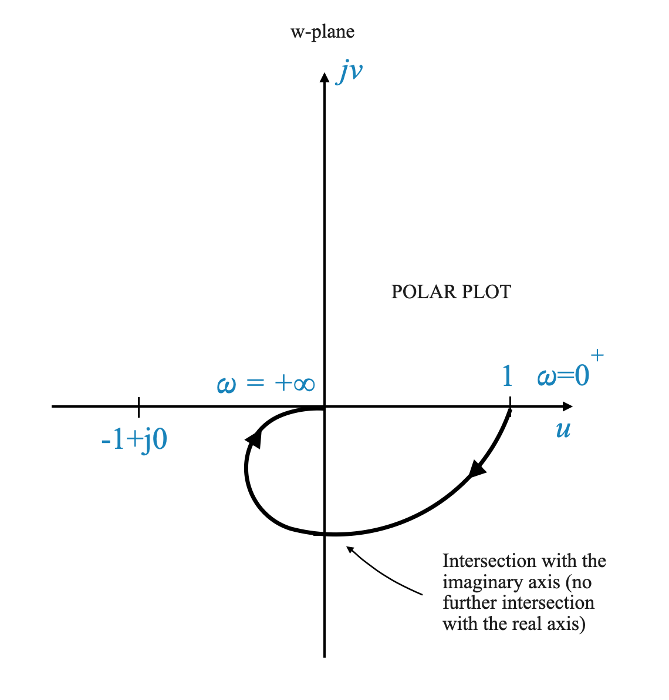

Application of Nyquist Stability Criterion in Control Systems
Reviewing the Nyquist Stability Criterion
Before we dive into the application of the Nyquist stability criterion in control systems, it’s essential to revisit the fundamental concept of the criterion. The Nyquist stability criterion is a graphical method used in control engineering to assess the stability of a closed-loop system.
The Nyquist Contour
The Nyquist criterion revolves around a specific contour in the complex plane, known as the Nyquist contour. In the s-plane (Laplace domain), this contour comprises the entire right-half plane, including the imaginary axis.
Nyquist Contour: The contour is mathematically represented as a semicircle with an infinite radius in the right-half plane, extending from \(+j\infty\) to \(-j\infty\).
Representation of \(s\): Any point on this semicircle is represented as \(s = R e^(j\theta)\), where \(R\rightarrow \infty\) and \(\theta\) varies from +90° to -90°.

|
The Mapping Concept
When applying the Nyquist criterion, we focus on how this contour maps in the \(G(s)H(s)\) plane, where \(G(s)H(s)\) represents the open-loop transfer function of the system.
Understanding the Physical Nature of G(s)H(s)
- Realizability: \(G(s)H(s)\) is a physically realizable transfer function.
\[ G(s)H(s) = \frac{N(s)}{\Delta(s)} \]
- Polynomial Order: Generally, the order of the numerator polynomial \(N(s)\) is less than or equal to the order of the denominator polynomial \(\Delta(s)\).
Mapping of the Nyquist Contour
Given that the Nyquist contour can be thought of composed of two main parts:
- The imaginary axis, i.e., the \(j\omega\) line, with \(\omega \in [-\infty, +\infty]\)
- The rest of the countour, i.e., the part that starts at \(+\infty\) on the imaginary axis, goes all around to get to \(+\infty\) on the real axis and then goes back to \(-\infty\) on the imaginary axis
It becomes particularly important to understand the behaviour of the mapping when \(R\rightarrow \infty\).
Infinite Radius: When \(R\rightarrow \infty\), the entire semicircle in the s-plane maps to a single point in the \(G(s)H(s)\) plane.
Condition: If the order of \(N(s)\) is less than \(\Delta(s)\), this point is the origin. If they are equal, it maps to a constant point on the real axis.
Strictly Proper Systems
Let’s delve deeper into the details of the open-loop transfer function $ G(s)H(s) $ and its behavior, especially at points tending towards infinity in the s-plane.
Consider the open-loop transfer function expressed as:
\[ G(s)H(s) = \frac{N(s)}{\Delta(s)} \]
Here, $ N(s) $ and $ (s) $ are the numerator and denominator polynomials respectively, with the order of $ N(s) $ (denoted as $ m $) being less than the order of $ (s) $. We denote this as $ [N(s)] = m < [(s)] $. For our analysis, we examine points on the Nyquist contour, represented as $ s = R e^{j} $, where $ R $.
When exploring the behavior of $ G(s)H(s) $ in the W-plane, we can break it down into two components: phase and gain.
Phase in the W-plane
The phase of $ G(s)H(s) $ in the W-plane can be determined by the angular contributions of its zeros and poles:
\[ \angle G(s)H(s) = \sum \angle \text{zeros} - \sum \angle \text{poles} \]
This phase angle is the sum of the angles of all zeros minus the sum of the angles of all poles of $ G(s)H(s) $.
Gain in the W-plane
The gain magnitude of $ G(s)H(s) $ in the W-plane is given by:
\[ | G(s)H(s) | = \frac{K \prod | \text{zeros} |}{\prod |\text{poles}|} \]
Here, $ K $ represents any constant multiplier in the transfer function. The gain is calculated as the product of the magnitudes of the zeros divided by the product of the magnitudes of the poles.
Behavior at Infinity
For points on the Nyquist contour where $ R $, the gain of $ G(s)H(s) $ approaches zero. This occurs because the number of poles exceeds the number of zeros, leading to division by an infinitely large value as $ R $ increases.
Consequently, any point on the Nyquist contour, as $ R $ tends to infinity, maps to the origin in the W-plane. Although the phase angle of $ G(s)H(s) $ varies as the point $ s $ moves along the contour, it does not significantly affect the mapping location in the W-plane, since the gain approaches zero and the point consistently maps to the origin.
Proper Systems
When the orders of the numerator and denominator polynomials in an open-loop transfer function $ G(s)H(s) $ are equal, denoted as $ m = n $, the behavior of the transfer function, particularly at points approaching infinity on the Nyquist contour, is distinct from the case where $ m < n $.
Let’s consider the open-loop transfer function:
\[ G(s)H(s) = \frac{N(s)}{\Delta(s)} \]
In this scenario, where $ m = n $, the order of the numerator polynomial $ N(s) $ is equal to the order of the denominator polynomial $ (s) $. This implies that $ G(s)H(s) $ has an equal number of zeros and poles in terms of their order.
Behavior in the W-plane
Gain at Infinity: When $ s = R e^{j} $ and $ R $, unlike the $ m < n $ case, the gain $ |G(s)H(s)| $ does not tend to zero. This is because the infinities in the numerator and denominator effectively cancel out, leaving a finite value.
Phase Angle: The phase angle $ G(s)H(s) $ is determined by the angular contributions of the zeros and poles, similar to the $ m < n $ case. However, since there is an equal number of zeros and poles (in terms of order), their angular contributions might balance out differently.
Mapping to the W-plane
- Mapping at Infinity: For points at infinity on the Nyquist contour, $ G(s)H(s) $ maps to a constant point on the W-plane. The exact location of this point depends on the specific values and distribution of zeros and poles of the transfer function.
Traversing the Nyquist Contour
Let’s clarify the concept of mapping the Nyquist contour in control systems. This process involves tracing a specific path in the complex plane, starting from a certain point and progressing through key locations.
As you go through the following steps, use the diagram below as a reference.
Starting Point: The mapping begins at the origin of the s-plane, where \(\omega = 0\). This is denoted as \(\omega = 0^+\).
Path Along the Imaginary Axis: From the origin, the path extends along the imaginary axis of the s-plane. This means we let \(s = j\omega\), and \(\omega\) increases from 0 to infinity. This segment is often described as \(\omega = 0^+\) to \(\omega = +\infty\).
Infinite Semicircle: The contour then transitions through an infinite semicircle in the right-half plane. This is conceptualized as \(\omega\) transitioning from \(+\infty\) to \(-\infty\). During this transition, the radius of the semicircle (\(R\)) approaches infinity.
Completing the Contour: Finally, the path returns to the origin along the negative imaginary axis. This is described as \(\omega\) moving from \(-\infty\) back to \(0\), denoted as \(\omega = 0^-\).
Symmetry and Simplification: The segment from \(\omega = 0\) to \(\omega = +\infty\) is a mirror image of the segment from \(\omega = -\infty\) to \(\omega = 0\). Because of this symmetry, the Nyquist plot is often simplified to only consider the first half of the contour (from \(\omega = 0^+\) to \(\omega = +\infty\)). The second half is simply a reflection across the real axis.
Significance in Stability Analysis: The entire Nyquist contour encompasses the right-half s-plane. The Nyquist criterion uses this contour to determine if there are any closed-loop poles (zeros of \(1 + G(s)H(s)\)) in the right-half plane, which are indicative of system instability.
Technique in Practice: Although this explanation outlines the theoretical approach, in practical mapping, the focus is often on the imaginary axis segment and the behavior at infinity. The symmetry of the plot simplifies the analysis, making it more manageable and insightful.
In summary, the effective mapping of the Nyquist contour involves tracing a path from the origin along the imaginary axis to infinity, around an infinite semicircle, and back to the origin. This mapping is crucial in applying the Nyquist criterion to assess the stability of control systems.

|
Figure: Nyquist Countour and Nyquist Plot. In this case, the system in CL is stable even though we do not know P.
Analysis of Nyquist Stability Criterion through Mapping of G(s)H(s) on the Nyquist Contour
Mapping the Transfer Function: The task at hand is to map $ G(s)H(s) $ as the complex variable $ s $ traverses the Nyquist contour. This journey along the contour will create a plot in the \(G(s)H(s)\) plane.
Creating the Nyquist Plot: As $ s $ moves along the Nyquist contour, we observe how the value of $ G(s)H(s) $ changes. The resulting plot in the \(G(s)H(s)\) plane is our primary focus.
Qualitative Nature of the Plot: While the exact quantitative values of the plot are not our main concern, its qualitative shape is crucial. The real axis and the imaginary axis of the \(G(s)H(s)\) plane are important reference points for our analysis.
Crucial Point on the Plot: A key element in the Nyquist plot is the point \(-1 + j0\). This point is critical because we have shifted our perspective from \(1 + G(s)H(s)\) to \(G(s)H(s)\) only.
Counting Encirclements: The essence of the criterion lies in counting the number of counter-clockwise encirclements of the point \(-1 + j0\) by the Nyquist plot. This count is denoted by \(N\).
The Nyquist Stability Criterion: The total number of counter-clockwise encirclements, \(N\), is related to two key variables: \(P\) and \(Z\). Here, \(N = P - Z\), where \(P\) represents the number of open-loop poles within the Nyquist region, and \(Z\) corresponds to the number of zeros, which equates to the number of closed-loop poles in the system.
In summary, the Nyquist stability criterion revolves around mapping $ G(s)H(s) $ along the Nyquist contour and analyzing the resulting plot, particularly focusing on the number of counter-clockwise encirclements around the critical point \(-1 + j0\). This analysis is key in determining the stability of the control system under examination.
Examples
Practical Examples
To reinforce these concepts, let’s analyze some examples:
Example 1: Feedback System with Open-Loop Transfer Function
Consider a feedback system with
\[ G(s)H(s) = \frac{1}{(T_1 s + 1)(T_2 s + 1)} \]
In the realm of frequency domain analysis, the Time Constant Form of a transfer function is typically more practical and user-friendly.
This approach contrasts with the Zero-Pole Form utilized in the root locus method. To illustrate, consider the following Zero-Pole Form of the open-loop transfer function ( G(s)H(s) ):
\[ G(s)H(s) = \frac{1}{(s + p_1)(s + p_2)} \]
In this form, the transfer function is explicitly expressed in terms of its poles (and zeros, if present). This is particularly useful for the root locus method, where the starting points (poles and zeros) are fundamental to constructing the locus.
However, for frequency response analysis, the Time Constant Form offers a more direct and intuitive understanding of the system’s behavior. This form simplifies the process of calculating the magnitude and phase response of the system, which are crucial in frequency domain methods.
The conversion between these two forms, from Zero-Pole to Time Constant or vice versa, is straightforward. It involves rearranging the transfer function into the desired format, ensuring that the essential characteristics of the system, such as its poles, zeros, and gain, remain consistent across both representations.
When presented with a transfer function in time constant form, we transform it into its sinusoidal equivalent by setting $ s = j$:
\[ G(j\omega)H(j\omega) = \frac{1}{(1 + j\omega T_1)(1 + j\omega T_2)} \]
This form of the transfer function characterizes the system’s response to sinusoidal inputs.
Rationale Behind the Sinusoidal Transfer Function The primary goal is to map the entire Nyquist contour. A critical observation is that the most important segment of this contour is the positive half of the imaginary axis. Once this segment is mapped, the rest of the mapping becomes relatively straightforward, as this segment reflects the frequency response of the open-loop system.
Linking Frequency Response with Nyquist Contour
Frequency Response: Defined as the output of the system when exposed to sinusoidal inputs, with frequencies ranging from $ = 0 $ to $ = $.
Mapping on Nyquist Contour: Mapping the positive half of the imaginary axis in the s-plane effectively equates to analyzing the open-loop system’s frequency response.
In this context, the sinusoidal transfer function $ G(j)H(j) $ undergoes a transformation corresponding to the substitution $ s = j$:
\[ G(j\omega)H(j\omega) \xrightarrow{s = j\omega} G(s)H(s) \]
The magnitude and phase of this function are represented by $ |G(j)H(j)| $ and $ G(j)H(j) $, respectively.
Magnitude $ |G(j)H(j)| $: This quantifies the amplitude ratio of the open-loop system in response to a sinusoidal input.
Phase Angle $ G(j)H(j) $: This indicates the change in phase angle of the sinusoidal input as processed by the open-loop system.
Knowing these two parameters for any given frequency allows us to understand the system’s output when it encounters a sinusoidal input.
This analysis reveals that $ G(j)H(j) $ essentially represents the open-loop system’s frequency response. Additionally, even if the analytical form of $ G(s)H(s) $ is not available, one can experimentally determine these magnitudes and phase angles, allowing the application of the Nyquist criterion using experimental data.
Pop-up Question: Why is the mapping of the positive half of the imaginary axis important in Nyquist analysis?
Answer: This mapping corresponds to the frequency response of the open-loop system, providing critical information about the system’s stability characteristics.
Sketching the Nyquist Plot
The following guideline, based on practical experience, outlines four critical points needed to sketch an effective Nyquist plot. These points are particularly relevant for evaluating the stability of control systems.
Identifying Four Key Points
- Magnitude and Angle at $ = 0 $
- Magnitude and Angle at $ = $
- Intersection with the Imaginary Axis
- Intersection with the Real Axis
These points provide a comprehensive view of the system’s response and are typically sufficient for a rough sketch of the Nyquist plot, especially when the primary concern is system stability.
Detailed Examination of Each Point for our Example
1. Magnitude and Angle at $ = 0 $
- For the given sinusoidal transfer function
\[ G(j\omega)H(j\omega) = \frac{1}{(1 + j\omega T_1)(1 + j\omega T_2)} \]
at $ = 0 $, the magnitude is 1, and the angle is 0 degrees.
This gives us our first critical point on the Nyquist plot:
\[ 1\angle{0^\circ}\;\;\; \omega=0 \]
2. Magnitude and Angle at $ = $
- As $ $ approaches infinity, the magnitude approaches zero, and the angle tends towards -180 degrees. This behavior is crucial in understanding how the plot behaves at high frequencies.
As $ = $ we can approximate:
\[ G(j\omega)H(j\omega) = \frac{1}{(1 + j\omega T_1)(1 + j\omega T_2)} = \frac{1}{j^2\omega^2T_1T_2}\]
Now we calculate:
\[ \lim_{\omega = \rightarrow \infty} \frac{1}{j^2\omega^2T_1T_2} \]
to obtain:
\[ 0\angle{-180^\circ}\;\;\; \omega=\infty \]
Intersections with Real and Imaginary Axes
To find the intersections of the transfer function with the real and imaginary axes, we can express the transfer function in the form of $ x + jy $:
\[ G(s)H(s) = \frac{1}{(1 + j\omega T_1)(1 + j\omega T_2)} = x + jy \]
and then analyze it for specific conditions:
Intersection with the Real Axis: Set the imaginary part, $ y $, to zero and solve for $ $ to find where the transfer function intersects the real axis.
Intersection with the Imaginary Axis: Set the real part, $ x $, to zero to determine the points of intersection with the imaginary axis.
Constructing the Polar Plot of the Frequency Response
The Polar Plot
Before diving into the Nyquist plot, we first create a polar plot of the frequency response of the open-loop system. This plot starts at $ = 0 $ and extends to $ = $.
We use the points we have calculated before:
| \(\omega = 0\) | \(1\angle{0^\circ}\) |
| \(\omega = \infty\) | \(0\angle{-180^\circ}\) |
and we draw the Plot:
|  |

|
Key Points of Analysis
- Omega = 0: At $ = 0 $, the magnitude is 1, and the angle is 0 degrees.
- Omega = Infinity: As $ $ approaches infinity, the magnitude tends towards zero, and the angle approaches -180 degrees.
Finally, we need to understand how to map the point:
\[ s = Re^{j\theta} \]
For this we will consider the original \(G(s)H(s)\) function. We used the sinusoidal transfer function only to map the imaginary axis.
\[ G(s)H(s) = \frac{1}{(T_1 s + 1)(T_2 s + 1)} \]
In this case:
\[ G(s)H(s)\Big|_{s = Re^{j\theta}} = \frac{1}{(T_1 Re^{j\theta} + 1)(T_2 Re^{j\theta} + 1)} \]
When \(R \rightarrow \infty\), the function becomes:
\[ \frac{1}{T_1 T_2 R^2e^{j2\theta}} \]
where \(\theta\) varies from \(+90^\circ\) through \(0^\circ\) to \(-90^\circ\).
- When \(R \rightarrow \infty\), the magnitude tends to zero.
- The angle is \(e^{-j2\theta}\): the angle hence varies from \(-180^\circ\) through \(0^\circ\) to \(180^\circ\).
We can update the Polar Plot to reflect this:

|
In this sketch, the most effective way to demonstrate the concept is by considering how the plot behaves as $ $ approaches infinity. Let’s interpret this as follows:
- At $ = +$: This point on the plot corresponds to $ $ tending towards positive infinity.
- At ( = -): Similarly, another point on the plot represents $ $ approaching negative infinity.
In this scenario, the contour we are discussing tends towards the origin of the complex plane.
Understanding the Contour’s Approach to the Origin
Approach and Departure: The contour approaches the origin asymptotically at an angle of -180 degrees and departs from the origin asymptotically at an angle of +180 degrees.
Significance of $ $ in $ R e^{j} $: The angle $ $ plays a role in this mapping. As $ $ varies, it illustrates how the contour enters and exits the vicinity of the origin. When entering, the contour does so asymptotically to -180 degrees, and when exiting, it moves away asymptotically to +180 degrees.
Mapping Interpretation: This behavior is a reflection of the mapping $ s = R e^{j} $ on the Nyquist plot. The angle $ $ significantly influences how the plot wraps around the origin, depicting the system’s response as the frequency $ $ moves through a wide range.
Simplifying the Nyquist Plot
Focus on Critical Points: For stability analysis, our primary interest lies in the vicinity of the point \(-1 + j0\). The shape of the plot around the origin, though mathematically intriguing, may not significantly impact stability analysis.
Practical Approach: In many scenarios, the entirety of the contour’s mapping around the origin can be simplified. We can consider the origin itself as the total map of a particular contour, as long as we are far from the critical point of \(-1 + j0\).
Analyzing the Approach to the Origin
- Asymptotic Behavior: The approach of the plot to the origin is important. Whether it approaches asymptotically to \(-180^\circ\) or \(+180^\circ\), or in another manner, is important, especially since it may involve the encircling of the \(-1\) point.

|
- Determining the Asymptote: While the detailed contour around the origin may not be essential for stability, the direction in which the plot approaches the origin can be really important. This direction, or asymptote, indicates potential encirclements of the critical point.
Pop-Up Question: Why is the polar plot an important step before creating the Nyquist plot?
Answer: The polar plot gives us a visual representation of the system’s frequency response, which is a foundational element in understanding and constructing the Nyquist plot.
Transitioning to Practical Nyquist Plot Construction
After we have created the polar plot, which illustrates the frequency response of the system, our next step is to construct the Nyquist plot. This is achieved by reflecting the polar plot across the real axis. The Nyquist plot thus formed represents the entire Nyquist contour’s mapping.
It’s important to note that in the context of frequency response, the concept of negative frequencies (\(\omega < 0\)) doesn’t have a direct physical interpretation. Frequencies are inherently positive values. The consideration of negative \(\omega\) values in our analysis is a mathematical tool, allowing us to create a mirror image of the plot for completeness.
Visualization of the Nyquist Plot
Imagine the polar plot as a graphical representation of the system’s response to varying positive frequencies. To extend this plot to the Nyquist plot, we simply mirror the existing plot across the real axis. This mirrored portion represents what would be the system’s response if negative frequencies were physically meaningful.
The figure above showe the polar plot and its mirrored image to form the complete Nyquist plot of the example we are considering.
Understanding the Frequency Response
The core of our analysis hinges on understanding the system’s frequency response. Once we have a clear picture of how the system responds to different frequencies (as shown in the polar plot), extending this understanding to the Nyquist plot becomes straightforward. The Nyquist plot, in turn, is a powerful tool in answering stability-related questions about the system.
Pop-up Question: Why do we consider negative frequencies in the Nyquist plot when they have no physical meaning?
Answer: Considering negative frequencies is a mathematical method to ensure the completeness of the Nyquist plot. It helps in visualizing the entire response of the system, including the symmetry about the real axis, which is crucial for stability analysis.
Example 2 - Contours passing through singularities
\[ G(s) = \frac{1}{s(\tau s + 1)} \]
First, the Polar Plot can be obtained using the sinusoidal transfer function:
\[ G(j\omega) = \frac{1}{j\omega(\tau j\omega + 1)} \]
| \(\omega = 0\) | \(\infty\angle{-90^\circ}\) |
| \(\omega = \infty\) | \(0\angle{-180^\circ}\) |
We will come back to the phase of the \(\omega = 0\) in a moment.
To calculate the Intersections with real and imaginary axis we convert \(G(j\omega)\) to its \(x+jy\) representation:
\[ G(j\omega) = x+jy = \frac{-T}{1+\omega^2T^2} - j\frac{1}{\omega(1+\omega^2T^2)} \]
From this equation, it is clear that there are no intersections with the real or imaginary axis. If there is an intersection, it is for \(\omega=\infty\) which we have calculated already.
- For \(\omega=0\) \(\rightarrow\) \(G(j0) = -T -j\infty\)
This gives us additional information. It goes to infinity along the asymptote at \(-T\).
We can sketch it:

|
This plot also shows why for \(\omega = 0\), the \(\angle{-90^\circ}\). The asymptotic behaviour and the phase show the same information.

|
The only problem is that we have an open-loop pole at the origin, and mapping that specific point gives an infinite value.
Addressing Open-Loop Poles in Nyquist Plot Construction
When dealing with open-loop poles located at the origin or along the imaginary axis, special techniques are required for constructing the Nyquist plot, as direct mapping of these poles results in infinite values.
Indentation Method for Nyquist Contour
Technique of Contour Indentation: To navigate around this challenge, the Nyquist contour is modified by indenting around the pole in question. This is done by sketching a small semicircle with radius $ $ adjacent to the pole, with $ $ approaching zero.
Rationale Behind Indentation: This adjustment is a practical measure. It’s important to note that having a pole exactly at the origin or on the imaginary axis often represents an idealized situation. In real-world systems, such poles would typically be located very close to, but not exactly on, the left-hand side of the complex plane (LHP).
Implication for Stability Analysis: This indentation method is a mathematical strategy to simplify the Nyquist plot while retaining accurate stability analysis. The essential aspect of the analysis remains unchanged.
Nyquist Contour Modification and Stability Analysis
Direction of Detouri|ng: The direction in which the contour is detoured around the pole does not pose a problem. However, it’s crucial to note the implications of this detouring on the stability criterion.
Inclusion of Poles in Nyquist Contour: If the detouring includes an open-loop pole within the Nyquist contour, this must be accounted for in the stability analysis. The enclosed pole contributes to the count of $ P $ in the Nyquist stability criterion, formulated as $ N = P - Z $.
Consistent Results in Stability: Regardless of the detouring direction, the resulting assessment of closed-loop stability remains consistent. What changes is the specific value of $ N $ obtained in the Nyquist criterion, while the overall stability conclusion for the system stays the same.
By carefully applying the indentation technique and appropriately considering the effects of detouring on the Nyquist stability criterion, we can ensure a robust and accurate stability analysis for control systems with open-loop poles on or near the imaginary axis.
Let’ see how this works with our example:
To understand the mapping of the Nyquist plot around an open-loop pole, particularly when the pole is at the origin or on the imaginary axis, we consider the semicircular path defined by:
\[ s = \epsilon e^{j\theta} \]
Here, $ $ varies from \(-90^\circ\) through \(0^\circ\) to \(+90^\circ\), effectively tracing a semicircle in the complex plane.
When substituting this expression into the transfer function, we have:
\[ G(s)H(s) = \frac{K}{\epsilon e^{j\theta}(T \epsilon e^{j\theta} + 1)} \]
Given the small value of $ $ (approaching zero), this expression can be approximated as:
\[ G(s)H(s) = \frac{K}{\epsilon e^{j\theta}} \]
Further simplifying, we get:
\[ G(s)H(s) = \frac{K}{\epsilon} e^{-j\theta} \]
This approximation leads to two important observations about the transfer function as we move along the semicircle:
Magnitude: The magnitude of the transfer function tends towards infinity. This is due to the presence of $ $ in the denominator, which approaches zero, making the overall expression tend towards infinity.
Angle: The angle changes from $ +90^$ through $ 0^$ to $ -90^$. This change in angle is critical as it reflects the phase shift occurring as we move around the semicircle.

|

|
The stability of a system in the context of the Nyquist criterion is determined by whether its Nyquist plot encircles the critical point (-1 + j0). For the given system:
\[ G(s) = \frac{K}{s(sT+1)} \]
we can analyze its stability based on the Nyquist plot behavior.
Stability Analysis Based on Nyquist Plot
Absence of Encirclement of \(-1\) Point: The system is deemed stable if the Nyquist plot does not encircle the \(-1\) point on the complex plane. In this case, the system’s Nyquist plot never goes around the \(-1\) point, which means that the system is stable.
Effect of Increasing \(K\): As the gain \(K\) increases, the magnitude of the system’s response increases. However, this increase in magnitude does not lead to an encirclement of the \(-1\) point. Therefore, even with higher values of \(K\), the Nyquist plot remains clear of the \(-1\) point.
Conclusion on Stability
- Stability for All Values of (K): Given the behavior of the Nyquist plot for this system, it can be concluded that the system is stable for all values of (K). This conclusion is drawn from the fact that there are no encirclements of the critical (-1) point, regardless of the gain (K).
The stability of the system, as analyzed through the Nyquist criterion, is thus not affected by variations in \(K\), making it stable across a range of gain values.

|
Example 3
\[ G(s)H(s) = \frac{4s + 1}{s^2(s + 1)(2s + 1)} \]
Let’s analyze this function to understand its implications for system stability using the Nyquist stability criterion.
Evaluating Key Points on the Nyquist Plot
For this transfer function, the Nyquist plot is constructed by evaluating the following:
\[ G(j\omega)H(s) = \frac{4j\omega + 1}{(j\omega)^2(j\omega + 1)(2j\omega + 1)} \]
At $ = 0 $: The transfer function becomes $ ^$. This suggests that the plot starts from infinity on the negative real axis.
At $ = $: Simplifying, we find the angle to be $ 0 ^$ or equivalently $ 0 ^$.
Intersections with the Imaginary Axis
Converting the transfer function into a vector form $ x + jy $ allows us to find intersections with the imaginary axis. However, for this particular transfer function, there are no intersections except at $ = 0 $ and $ = $.
Nyquist Plot Construction

|
- Origin Consideration: The presence of a double pole at the origin requires special attention. We detour around this pole using a semicircle with an infinitesimal radius $ $.
- Mapping of the Semicycle: The mapping of this semicircle, represented as $ e^{j} $, results in a plot that spans from $ +180^$ to $ -180^$ with an infinite radius.
As before, to understand the mapping of the Nyquist plot around the two open-loop poles at the origin, we consider the semicircular path defined by:
\[ s = \epsilon e^{j\theta} \]
Here, $ $ varies from \(-90^\circ\) through \(0^\circ\) to \(+90^\circ\), effectively tracing a semicircle in the complex plane.
When substituting this expression into the transfer function, we have that we can approximate \(G(s)H(s)\) as:
\[ G(s)H(s) = \frac{1}{s^2} \]
Given the small value of $ $ (approaching zero), this expression can be approximated as:
\[ G(s)H(s) = \frac{1}{\epsilon e^{2j\theta}} \]
And further simplifying, we get:
\[ G(s)H(s) = \frac{K}{\epsilon} e^{-j2\theta} \]
and the angle goes from \(+180^\circ\) to \(-180^\circ\), when \(\theta\) goes from \(-90^\circ\) to \(90^\circ\).
Stability Analysis Based on Nyquist Criterion
- Impact of System Gain ($ K $): Varying $ K $ in the system
\[ G(s)H(s) = K \frac{4s + 1}{s^2(s + 1)(2s + 1)} \]
affects the magnitude of the Nyquist plot. This might lead to the encirclement of the \(-1\) point, and the system stability depends on the specific value of \(K\).